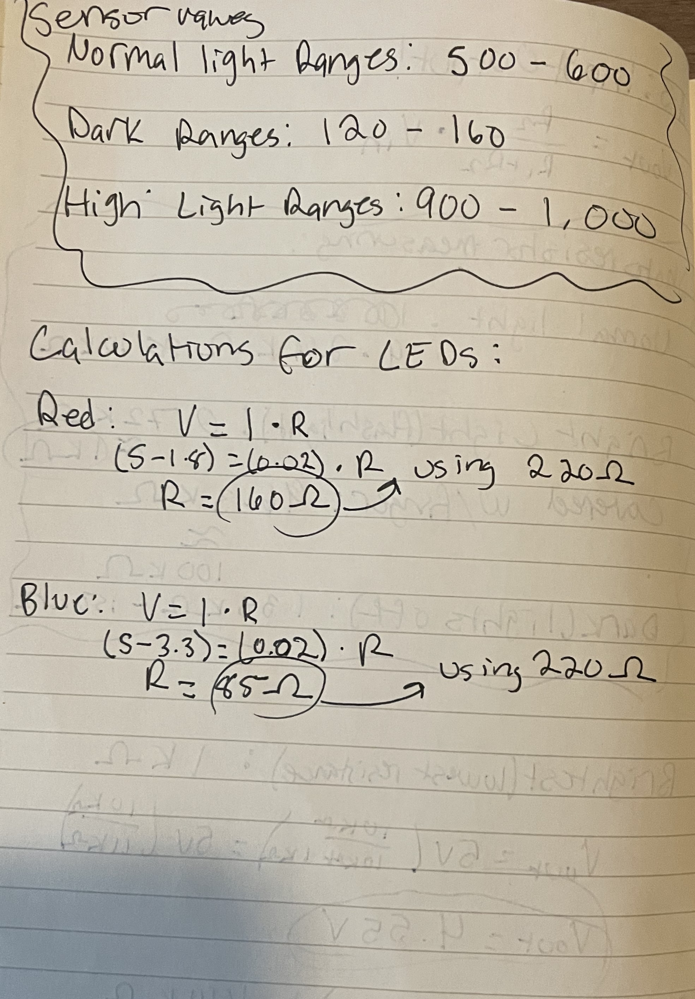

A3 Input Output

Here is all the documentation for assignment 3!
Here is all the documentation for assignment 3!
I began by measuring the resistance of the photocell in different environments. I used a 10k ohm resistor as this was a value in the same range that I was measuring (kΩ). I then did voltage divider calculations to determine what Vout would be when the photocell is in the dark, and when it is exposed to a bright light.
Here are the calculations for resistance for the LEDS. I used 220 ohm resistors for both the red and blue LED.
int redPin = 11; // set constant for the pin that red LED is attached to
int bluePin = 10; // set constant for the pin that blue LED is attached to
void setup() {
Serial.begin(9600); // intiating serial output on my computer
pinMode(redPin, OUTPUT); // initialze pin 11 to be output
pinMode(bluePin, OUTPUT); // initialize pin 10 to be output
pinMode(A0, INPUT); // initialize analog 0 pin to be input
}
void loop() {
int currValue = analogRead(A0); // reading the current sensor value
Serial.print("Current Value :"); // print statements to display the current value to help define ranges
Serial.println(currValue); // print statements to display the current value to help define ranges
int mappedValue = map(currValue, 100, 1000, 0, 255); // map the current value to a value from 0 to 255
if(currValue <= 160){
analogWrite(bluePin, mappedValue); // if the cell is in the dark, turn on the blue LED
delay(5000); // wait five seconds
analogWrite(bluePin,0); // turn off blue LED
}
if(currValue >= 900){
analogWrite(redPin, mappedValue); // if cell exposed to bright light, turn on red LED
delay(5000); // wait five seconds
analogWrite(redPin,0); // turn off red LED
}
}